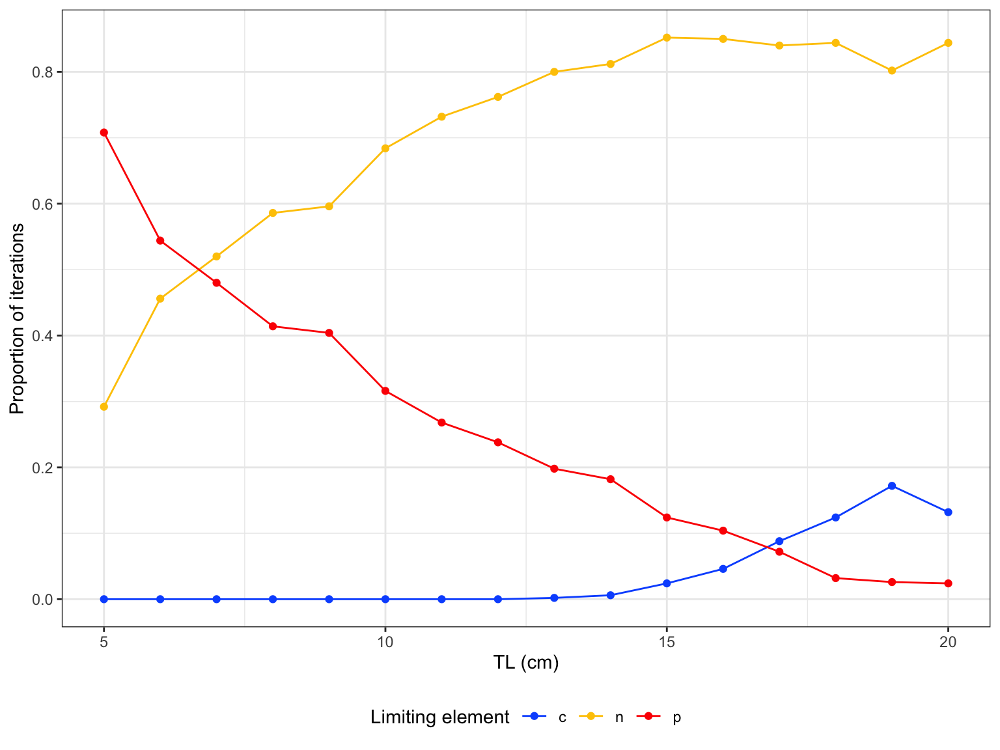
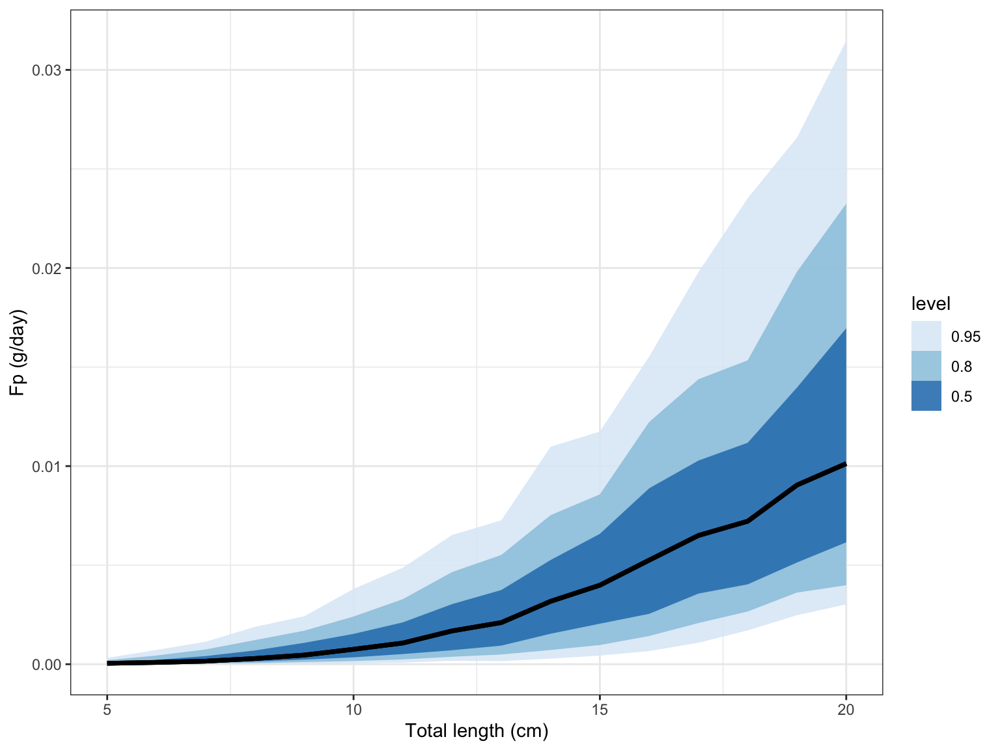
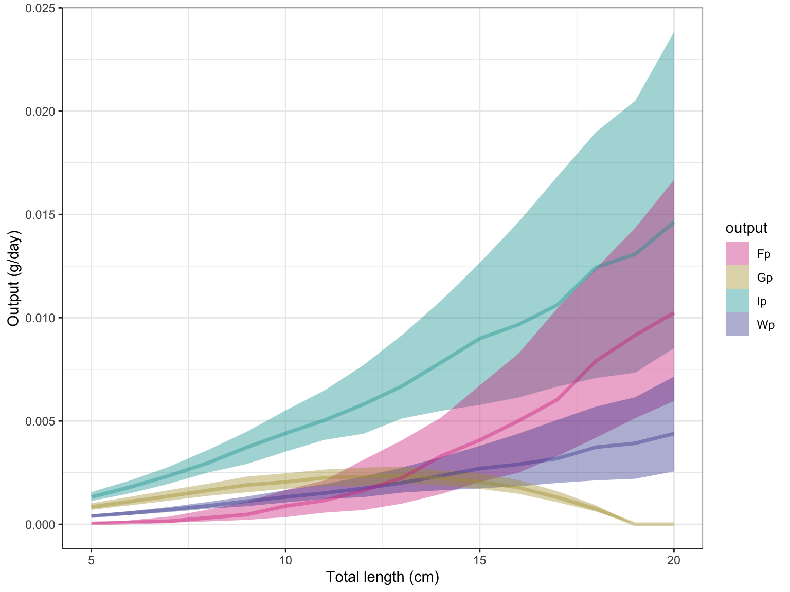
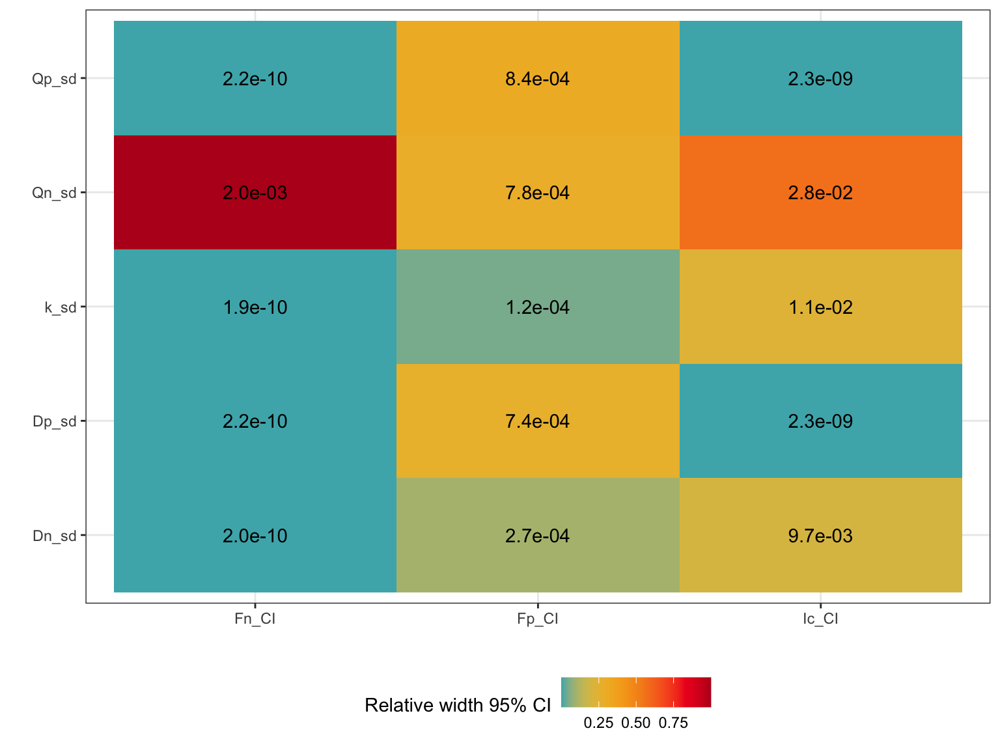

vignettes/intro_to_fishflux.Rmd
intro_to_fishflux.RmdThe fishflux package provides a tool to model fluxes of C (carbon), N (nitrogen) and P (phosphorus) in fishes. It combines basic principles from elemental stoichiometry and metabolic theory. The package offers a user-friendly interface to apply the model. fishflux is ideal for fish ecologists wishing to predict ingestion, egestion and excretion to study fluxes of nutrients and energy.
Main assets:
fishflux uses Markov Chain Monte Carlo simulations provided by stan. Therefore, the first step is to install rstan. It’s important to closely follow all the steps described on the page depending on your operating system.
The best way to install the latest development version of fishflux is to install it from GitHub.
install.packages("devtools")
devtools::install_github("nschiett/fishflux", dependencies = TRUE) # if errors are returned, try adding `args = "--preclean"` to `install_github`
library(fishflux)fishflux will be available on CRAN in the future:
install.packages("fishflux")
library(fishflux)Another option is to download the source file available on GitHub here.
install.packages(path_to_fishflux_file, repos = NULL, type = "source")
library(fishflux)fishflux is designed to follow three simple steps:
Before running the model, the parameters have to be specified. Below, there is a table showing all parameters needed to run the model simulation. fishflux provides several functions to find some of these parameters, but note that others have to be provided by the user at this stage. Ideally, all parameters should also have a standard deviation, so that their uncertainty can be reflected in the model predictions
| Symbol | Description | Unit |
|---|---|---|
| ak | Element-specific assimilation efficiency | _ |
| lt | Total length of individual | cm |
| linf | Asymptotic adult length (VBGC) | cm |
| κ | Growth rate parameter (VBGC) | yr − 1 |
| t0 | Age at settlement (VBGC) | yr |
| lwa | Parameter length-weight relationship | g cm − 1 |
| lwb | Parameter length-weight relationship | _ |
| Qk | Element-specific body content percentage | % |
| f0 | Metabolic normalisation constant independent of body mass | g Cg − αd − 1 |
| alpha | Mass-scaling exponent | _ |
| theta | Activity scope | _ |
| v | Environmental temperature | C |
| h | trophic level | _ |
| r | Aspect ratio of caudal fin | _ |
| F0nz | Mass-specific turnover rate of N | g Ng − 1d − 1 |
| F0pz | Mass-specific turnover rate of P | g Pg − 1d − 1 |
| mdw | Ratio of dry mass and wet mass of fish | _ |
| Dk | Elemental stoichiometry of diet | % |
A good place to start is checking if you are using the correct scientific name of your species of interest. The function name_errors will tell you if the species name is correct. This function can be useful, especially when working with larger databases.
# example
fishflux::name_errors("Zebrazoma scopas")
#> Inaccurate species names found:
#> [1] "Zebrazoma scopas"Once the species names are verified and/or corrected we can continue with specifying some parameters.
The find_lw function searches FishBase to find length-weight relationship parameters lw_a and lw_b extracted from Froese and Pauly (2018).
# example
fishflux::find_lw("Zebrasoma scopas", mirror = "se")
#> species lwa_m lwa_sd lwb_m lwb_sd
#> 1 Zebrasoma scopas 0.02455 0.00269898 2.98 0.0255102The model uses parameters von Bertalanffy’s growth model (VBGM) to estimate growth rates. A quick way to get available information from FishBase is the function growth_params(). This can be a good indication, but users should interpret these estimates with a critical eye, as they come from disparate sources of varying accuracy. Alternatively, it is advised to use growth curves derived from otolith readings. In the absence of otolith data, one might consider extracting standardised estimations from Morais and Bellwood (2018).
# example
# The option otolith=TRUE filters out sources that used otoliths for the estimation of growth parameters
fishflux::growth_params("Sargocentron microstoma", otolith = FALSE)
#> # A tibble: 1 x 7
#> species Locality k Linf t0 method comments
#> <chr> <chr> <dbl> <dbl> <dbl> <chr> <chr>
#> 1 Sargocentron mic… Tiahura reef, Moor… 1 18.6 NA length-frequ… <NA>Further, there are a couple more basic functions to get an indication of parameters that are available on FishBase such as trophic_level() and aspect_ratio(). Note that it is always better to get the approximations through analysis, measurements and otolith analysis over parameters extracted from functions, such as growth_params(), trophic_level() and aspect_ratio(). To get an overview of all parameters available, fishflux provides a wrapper function model_parameters().
# example
zebsco <- fishflux::model_parameters("Zebrasoma scopas", family = "Acanthuridae", temp = 27, mirror = "se")
## Here we set the temperature at 27 degrees as an example, this the average sea temperature in Moorea, French Polynesia
print(zebsco)
#> species t0 Linf k asp troph lwa_m lwa_sd lwb_m
#> 1 Zebrasoma scopas -0.49 13.3 0.425 2.02091 2 0.02455 0.00269898 2.98
#> lwb_sd mdw_m f0_m f0_sd alpha_m alpha_sd
#> 1 0.0255102 0.2504833 0.001517989 2.932697e-10 0.77 0.05286288All other parameters have to be provided by the user. For more information on how to acquire these parameters, take a look at (“this paper” add reference to methods paper).
Once all the parameters are collected, we can run the model through cnp_model_mcmc(). Note that this model can be run with or without specifying the standard deviation (sd) of each parameter. If the sd of a certain parameter is not provided, it will be automatically set to a very low value (1-10). As mentioned before, it is advisable to include uncertainty of parameters. fishflux is designed to use the MCMC sampler in order to include uncertainty of predictions.
## load the example parameters for Zebrasoma scopas, a list
param_zebsco <- fishflux::param_zebsco
## Run the model, specifying the target length(s) and the parameter list
model <- fishflux::cnp_model_mcmc(TL = 5:20, param = param_zebsco)The object model now contains all the samples generated from the MCMC simulation and a summary of all parameters generated. To extract certain variables of interest, use the extract() function. Predictions for fluxes of C, N and P are all in g / day.
fishflux::extract(model, c("Fn","Fp"))
#> TL Fn_mean Fn_median Fn_sd Fn_2.5% Fn_97.5%
#> 1 5 0.0008878791 0.0008215703 0.0004128497 0.0002819877 0.001810289
#> 2 6 0.0012937452 0.0012194027 0.0005984106 0.0003325178 0.002781195
#> 3 7 0.0017678548 0.0016264862 0.0008464677 0.0004279481 0.003640799
#> 4 8 0.0026656651 0.0024774642 0.0012569680 0.0008143328 0.005858832
#> 5 9 0.0033718963 0.0030384877 0.0017193044 0.0008030942 0.007270090
#> 6 10 0.0045157222 0.0041382641 0.0023720498 0.0011498317 0.010540190
#> 7 11 0.0055051066 0.0049014060 0.0030432590 0.0013742969 0.012543110
#> 8 12 0.0070261052 0.0061866481 0.0041174784 0.0013615972 0.017325667
#> 9 13 0.0089977557 0.0075933158 0.0054941154 0.0023425204 0.022416723
#> 10 14 0.0115729144 0.0099166094 0.0073535653 0.0025291256 0.028839834
#> 11 15 0.0138061558 0.0118686245 0.0088054527 0.0025836609 0.033477884
#> 12 16 0.0168305138 0.0144525909 0.0111038964 0.0032264400 0.042527583
#> 13 17 0.0199593167 0.0178366821 0.0131565870 0.0042320207 0.050958254
#> 14 18 0.0236814714 0.0208164056 0.0150602537 0.0048877993 0.059064183
#> 15 19 0.0276317015 0.0228689687 0.0186960595 0.0067165734 0.072775989
#> 16 20 0.0340744003 0.0294038010 0.0216457698 0.0073576181 0.085209629
#> Fn_25% Fn_75% Fp_mean Fp_median Fp_sd Fp_2.5%
#> 1 0.0005844312 0.001121541 8.566553e-05 4.365811e-05 0.0001123116 2.162964e-06
#> 2 0.0008789380 0.001636349 1.614284e-04 8.990615e-05 0.0001783677 6.561898e-06
#> 3 0.0011761112 0.002226135 2.716112e-04 1.478191e-04 0.0002928365 1.626180e-05
#> 4 0.0017723716 0.003267158 4.770086e-04 2.828036e-04 0.0004965912 1.788969e-05
#> 5 0.0021943825 0.004376385 6.945649e-04 4.044052e-04 0.0007128435 1.945682e-05
#> 6 0.0027462033 0.005676398 1.117364e-03 7.956336e-04 0.0010008397 8.030831e-05
#> 7 0.0032012951 0.007290433 1.451384e-03 1.088776e-03 0.0011979991 8.021838e-05
#> 8 0.0039410827 0.009373346 2.034705e-03 1.648301e-03 0.0016527690 1.241083e-04
#> 9 0.0048482583 0.011963470 2.808995e-03 2.314435e-03 0.0022004613 1.285605e-04
#> 10 0.0059951088 0.015222120 3.822166e-03 3.265342e-03 0.0029028173 2.089220e-04
#> 11 0.0066758920 0.018878268 4.798672e-03 3.984386e-03 0.0035206671 4.234771e-04
#> 12 0.0078927062 0.023456900 6.131006e-03 5.119386e-03 0.0044838451 6.702959e-04
#> 13 0.0091455176 0.027083752 7.511071e-03 6.594743e-03 0.0052616763 1.360282e-03
#> 14 0.0122613646 0.031418469 9.163140e-03 8.029475e-03 0.0059486405 1.677083e-03
#> 15 0.0134032521 0.037317103 1.100439e-02 9.158021e-03 0.0074765982 2.657862e-03
#> 16 0.0168581000 0.046408738 1.349798e-02 1.155140e-02 0.0085752468 2.823320e-03
#> Fp_97.5% Fp_25% Fp_75%
#> 1 0.0003979009 2.281339e-05 9.042723e-05
#> 2 0.0006775705 4.789245e-05 1.977370e-04
#> 3 0.0011131616 7.820827e-05 3.650763e-04
#> 4 0.0017583897 1.409044e-04 6.360775e-04
#> 5 0.0025022372 1.781831e-04 1.009734e-03
#> 6 0.0035998491 3.707525e-04 1.594015e-03
#> 7 0.0043625758 5.089356e-04 2.152075e-03
#> 8 0.0064290374 7.137883e-04 2.956108e-03
#> 9 0.0082616348 1.048618e-03 4.003697e-03
#> 10 0.0104184342 1.553953e-03 5.355768e-03
#> 11 0.0127356697 1.788632e-03 6.934567e-03
#> 12 0.0163848058 2.398432e-03 8.711478e-03
#> 13 0.0198288139 3.060943e-03 1.048612e-02
#> 14 0.0232626536 4.540266e-03 1.222836e-02
#> 15 0.0287294268 5.368635e-03 1.473722e-02
#> 16 0.0336884352 6.739749e-03 1.811009e-02To visualize main outputs of the model, fishflux contains a plotting function. The function limitation() returns the proportion of iterations of the model simulation that had limitation of C, N and P respectively. The function plot_cnp() plots the predicted output of the model.
## limitation
fishflux::limitation(model)
#> tl nutrient prop_lim
#> 1 5 c 0.000
#> 2 6 c 0.000
#> 3 7 c 0.000
#> 4 8 c 0.000
#> 5 9 c 0.000
#> 6 10 c 0.000
#> 7 11 c 0.000
#> 8 12 c 0.000
#> 9 13 c 0.000
#> 10 14 c 0.010
#> 11 15 c 0.014
#> 12 16 c 0.036
#> 13 17 c 0.094
#> 14 18 c 0.116
#> 15 19 c 0.150
#> 16 20 c 0.130
#> 17 5 n 0.352
#> 18 6 n 0.434
#> 19 7 n 0.468
#> 20 8 n 0.562
#> 21 9 n 0.580
#> 22 10 n 0.694
#> 23 11 n 0.708
#> 24 12 n 0.750
#> 25 13 n 0.802
#> 26 14 n 0.844
#> 27 15 n 0.830
#> 28 16 n 0.858
#> 29 17 n 0.830
#> 30 18 n 0.858
#> 31 19 n 0.836
#> 32 20 n 0.856
#> 33 5 p 0.648
#> 34 6 p 0.566
#> 35 7 p 0.532
#> 36 8 p 0.438
#> 37 9 p 0.420
#> 38 10 p 0.306
#> 39 11 p 0.292
#> 40 12 p 0.250
#> 41 13 p 0.198
#> 42 14 p 0.146
#> 43 15 p 0.156
#> 44 16 p 0.106
#> 45 17 p 0.076
#> 46 18 p 0.026
#> 47 19 p 0.014
#> 48 20 p 0.014
## Plot one variable:
fishflux::plot_cnp(model, y = "Fp", x = "tl", probs = c(0.5, 0.8, 0.95))
## Plot multiple variables:
fishflux::plot_cnp(model, y = c("Fp", "Gp", "Ip", "Wp"), x = "tl", probs = 0.5)
The function sensitivity() looks at how the distribution of the input variables affects the uncertainty of the model predictions. Basically, the model is run for each input parameter, while keeping all the others fixed. The output of the function gives a matrix of the width of the 95% CI for all model predictions (columns), depending on the input variables (rows). The input parameters and output variables of interest can be specified by arguments “par” and “out” respectively.
fishflux::sensitivity(TL = 10, param = list(k_sd = 0.2, Dn_sd = 0.2, Dc_sd = 0.1),
par = c("k_sd","Dn_sd","Dc_sd"),
out = c("Ic", "In", "Ip", "Gc"))
#> Ic_CI In_CI Ip_CI Gc_CI
#> k_sd 0.03229921 3.875905e-03 1.291968e-03 1.240290e-02
#> Dn_sd 0.24640210 4.762825e-03 9.856084e-03 6.483668e-11
#> Dc_sd 0.01134115 2.611649e-10 8.684438e-11 6.853269e-11For more information on the theoretical framework of the model, see Schiettekatte et al. (2020) ( paper ). Every function of fishflux has a help page with more documentation. In the case of errors, bugs or discomfort, you are invited to raise an issue on GitHub. fishflux is always in development and we are happy to take your comments or suggestions into consideration.
Froese, R., and D. Pauly. 2018. “FishBase.” World Wide Web Electronic Publication.
Morais, Renato A, and David R Bellwood. 2018. “Global Drivers of Reef Fish Growth.” Fish and Fisheries 19 (5): 874–89.
Schiettekatte, N. M. D., D. R. Barneche, S. Villéger, J. E. Allgeier, D. E. Burkepile, S. J. Brandl, J. M. Casey, et al. 2020. “Nutrient Limitation, Bioenergetics, and Stoichiometry: A New Model to Predict Elemental Fluxes Mediated by Fishes.” Functional Ecology, no. Accepted Author Manuscript. https://doi.org/10.1111/1365-2435.13618.